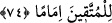

müşâhede ettiler. Hâsılı Allah’ın âyetlerinden gafil olmadılar.”
Bu zikredilen mânâ, kâfîrlerin ve münâfıkların yaptığına târiz olarak zıd bir mânâ ile
ifâde edilmiştir. Nefîyle kasdedilen sağırlığın ve körlüğün nefyidir; her ne kadar nefîy
edâtı kendisine dâhil olmuş olsa bile “
düşme/davranma”nın nefyi değildir.
74. (Ve o kullar): “Rabbimiz! Bize gözümüzü aydınlatacak eşler ve zürriyetler
bağışla ve bizi takvâ sâhiplerine önder kıl!” derler.
(Ve o kullar): “Rabbimiz!” kendilerini tâate ve fazîletlere sâhip olmaya muvaffak
kılarak “Bize gözümüzü aydınlatacak eşler ve zürriyetler bağışla” bahşet. Çünkü
mü’mîn, Allah’a tâat yolunda âilesinden yardım ve destek görünce kalbi onlar sebebiyle
sevinçle dolar ve dinde onların kendisine yardımlarını görünce gözü aydın olur.
“Zürriyyetlerini de onlara katmışızdır...” (et-Tûr, 52/21) âyetinde vaad olunduğu
üzere cennette onların kendisine katılmalarını bekler ve umar.
Onların Allah’tan istedikleri “göz aydınlığı”ndan maksad, mal, mevkî, güzellik ve
benzerleri değil dînî fazîlet ve üstünlüklerdir.
“
(hibe)” malik olduğun şeyi başkasına karşılıksız olarak vermektir. Allah Teâlâ,
herkese hak ettiğini karşılıksız olarak verdiği ve bağışladığı için “
” ve “
”
diye vasfedilir.
“
” kelimesi “
”ün çoğuludur. Birbirine benzeyen veya zıt olan iki şeyden her
birine “
” denir. “
” kelimesi, “
”nin çoğuludur. Asıl olarak küçük çocuklar,
demektir. Daha sonra büyük çocuklar için de kullanılır olmuştur. el-Kâmûs’ta der ki: “
” bir şeyi çoğaltmak demektir. İnsan ve cinlerin nesli için kullanılan “
”
kelimesi de bu fiilden türemiştir.
“ ” kelimesi, ya “
(karar kılmak, yerleşmek)” kelimesinden türemiştir. Bunun
mânâsı, kalbinin hoşlandığı kimseye tesadüf etmesi, gözü başkasına bakmaktan kesilip
onda karar kılması ve ondan ötesine tamah etmemesidir. Ya da soğuk anlamındaki “
”
kelimesinden gelmektedir. Araplar sıcaktan eziyet duyarlar ve soğukta rahat ederler.
Buna göre “gözün aydın olması” sevinmek ve rahatlamaktan kinâyedir. Çünkü sevinç
anında gözden akan yaş soğuk, üzüntü anında gözden akan yaş sıcaktır.
“ ” harfi, ya ibtidâiyyedir (başlangıç ifâde eder). “Onların tarafından bize
gözlerimizi aydınlatacak tâat ve salâh bağışla.” demektir. Ya da beyâniyyedir (açıklama
içindir). Sanki “Bize göz aydınlığı bağışla.” denilmiş, sonra da bu “göz aydınlığı”
açıklanmış ve “eşlerimizden ve nesillerimizden” sözüyle beyan edimiştir. Bunun